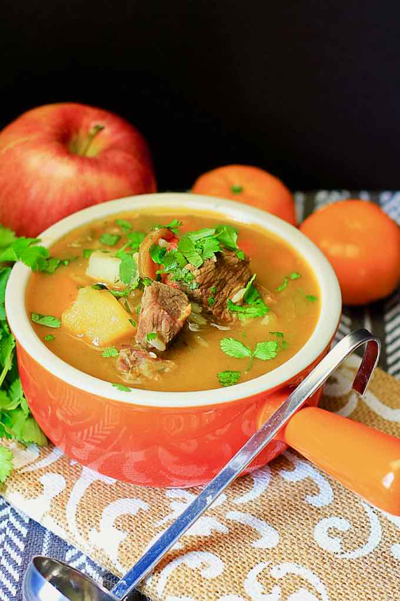

Preparación

- Paso 1 :
En una cacerola, coloque un poco de aceite y sofría el ajo con la cebolla y el locote. Coloque la carne y proceda a sellarla. Añada sal y pimienta.
- Paso 2 :
Luego incorpore el agua y deje cocinar por unos 45 minutos, hasta que la carne ablande.
- Paso 3 :
Incorpore el choclo, las papas, las zanahorias, el zapallo y el arroz. Cocine por unos 20 minutos y rectifique la sazón.
- Paso 4 :
Sirva bien caliente.